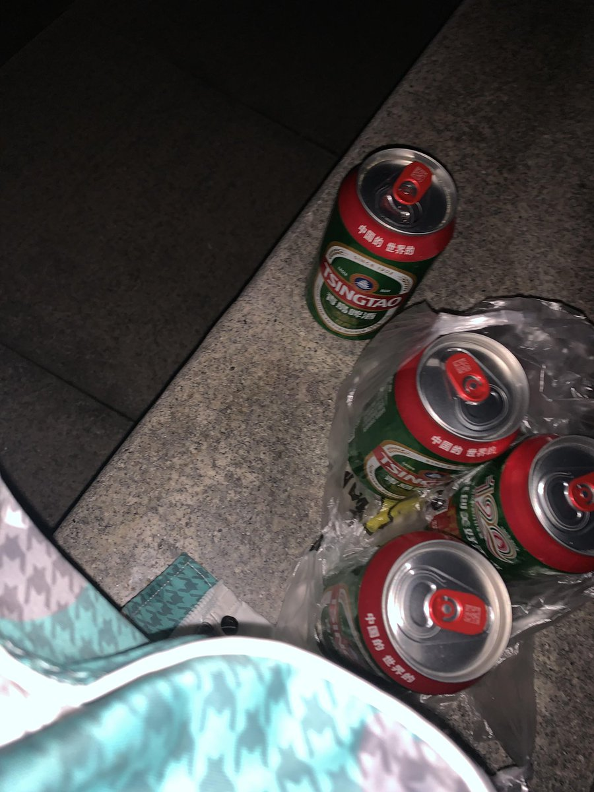

スパイシスペース
@SpicyspacEmk16
@Imran19549446 师傅师傅，你也不希望在平台上的评分被降低对吧😁

桃源^奈奈生🌟🏳️⚧️（srs手术规划中）
@Imran19549446
刚刚打车回家的路上被滴滴师傅说我败坏风气 男不男女不女..说我极度自私不考虑父母不考虑家人 … 说这样走在街上会影响青少年的学生的身心…（说了很多很多难听的话…）我好像已经习惯不去反驳一切 默默接受这些社会带给我的恶意… 🥺 你们愿意陪我一起喝一杯吗…. https://t.co/RoGI7qFi9z